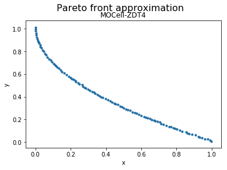

MOCell¶
Example¶
[1]:
from jmetal.algorithm.multiobjective.mocell import MOCell
from jmetal.operator.crossover import SBXCrossover
from jmetal.operator.mutation import PolynomialMutation
from jmetal.problem import ZDT4
from jmetal.util.archive import CrowdingDistanceArchive
from jmetal.util.neighborhood import C9
from jmetal.util.termination_criterion import StoppingByEvaluations
problem = ZDT4()
max_evaluations = 25000
algorithm = MOCell(
problem=problem,
population_size=100,
neighborhood=C9(10, 10),
archive=CrowdingDistanceArchive(100),
mutation=PolynomialMutation(probability=1.0 / problem.number_of_variables, distribution_index=20),
crossover=SBXCrossover(probability=1.0, distribution_index=20),
termination_criterion=StoppingByEvaluations(max=max_evaluations)
)
algorithm.run()
front = algorithm.get_result()
We can now visualize the Pareto front approximation:
[3]:
from jmetal.lab.visualization.plotting import Plot
plot_front = Plot(plot_title='Pareto front approximation', axis_labels=['x', 'y'])
plot_front.plot(front, label='MOCell-ZDT4')

API¶
- class jmetal.algorithm.multiobjective.mocell.MOCell(problem: ~jmetal.core.problem.Problem, population_size: int, neighborhood: ~jmetal.util.neighborhood.Neighborhood, archive: ~jmetal.util.archive.BoundedArchive, mutation: ~jmetal.core.operator.Mutation, crossover: ~jmetal.core.operator.Crossover, selection: ~jmetal.core.operator.Selection = <jmetal.operator.selection.BinaryTournamentSelection object>, termination_criterion: ~jmetal.util.termination_criterion.TerminationCriterion = <jmetal.util.termination_criterion.StoppingByEvaluations object>, population_generator: ~jmetal.util.generator.Generator = <jmetal.util.generator.RandomGenerator object>, population_evaluator: ~jmetal.util.evaluator.Evaluator = <jmetal.util.evaluator.SequentialEvaluator object>, dominance_comparator: ~jmetal.util.comparator.Comparator = <jmetal.util.comparator.DominanceComparator object>)[source]¶
Bases:
GeneticAlgorithm[S,R]- replacement(population: List[S], offspring_population: List[S]) List[List[S]][source]¶
Replace least-fit population with new individuals.